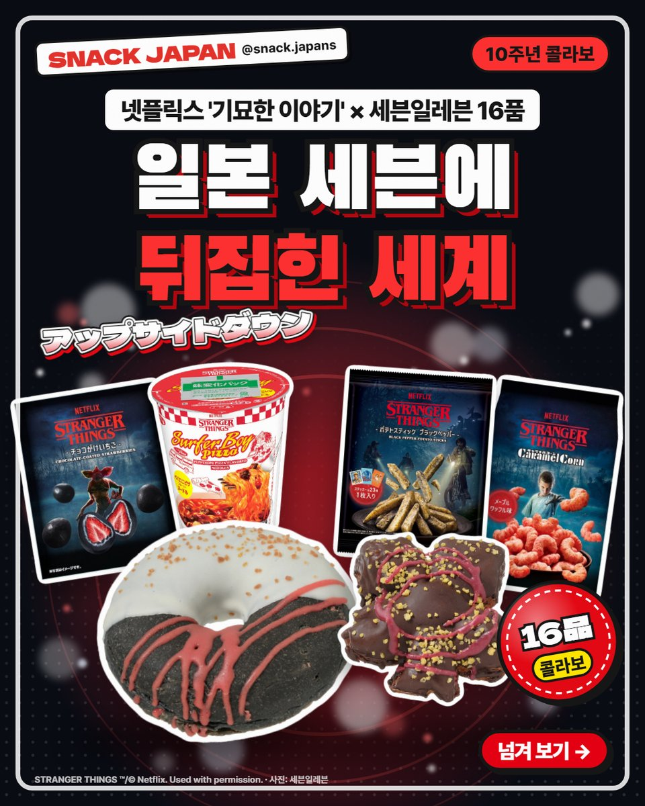
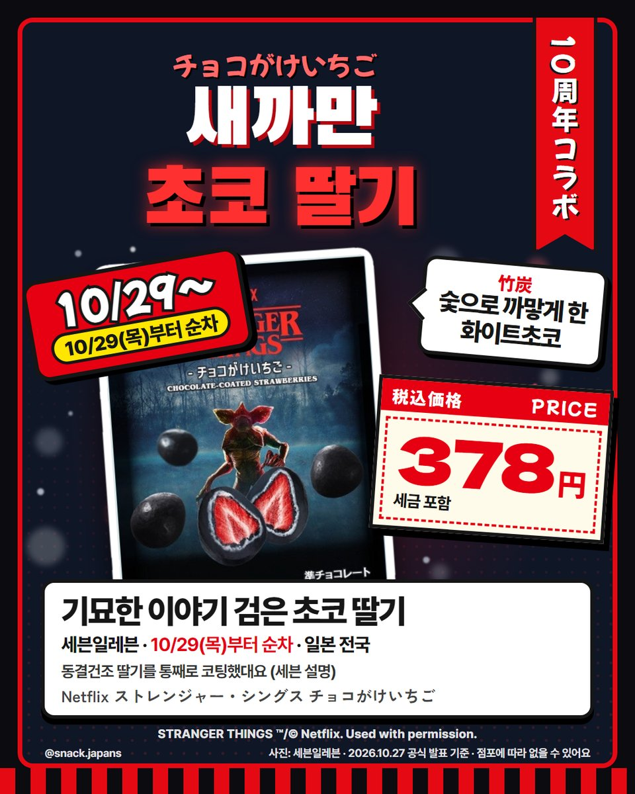
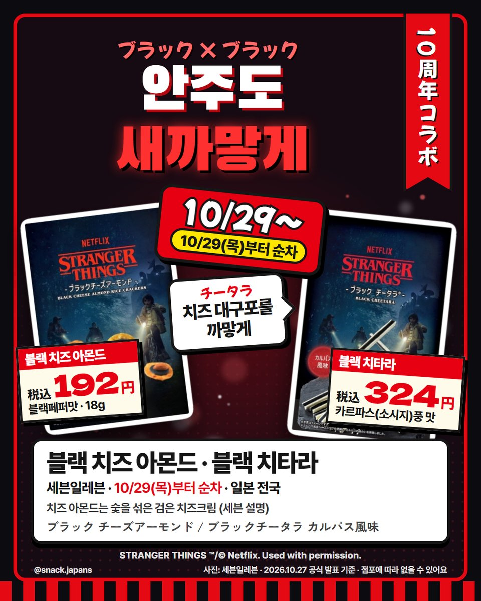
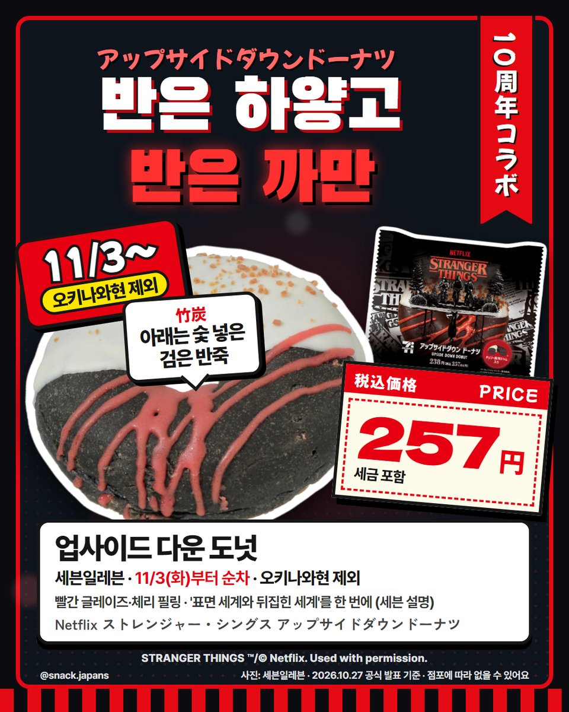
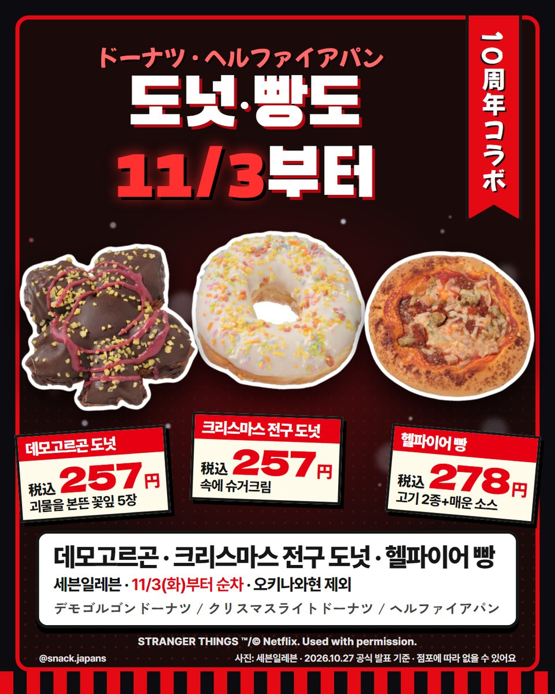
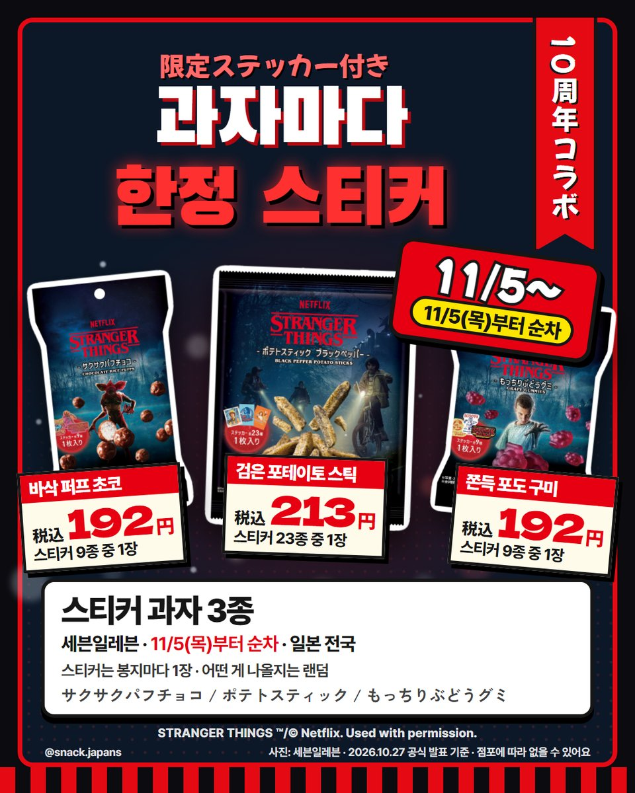
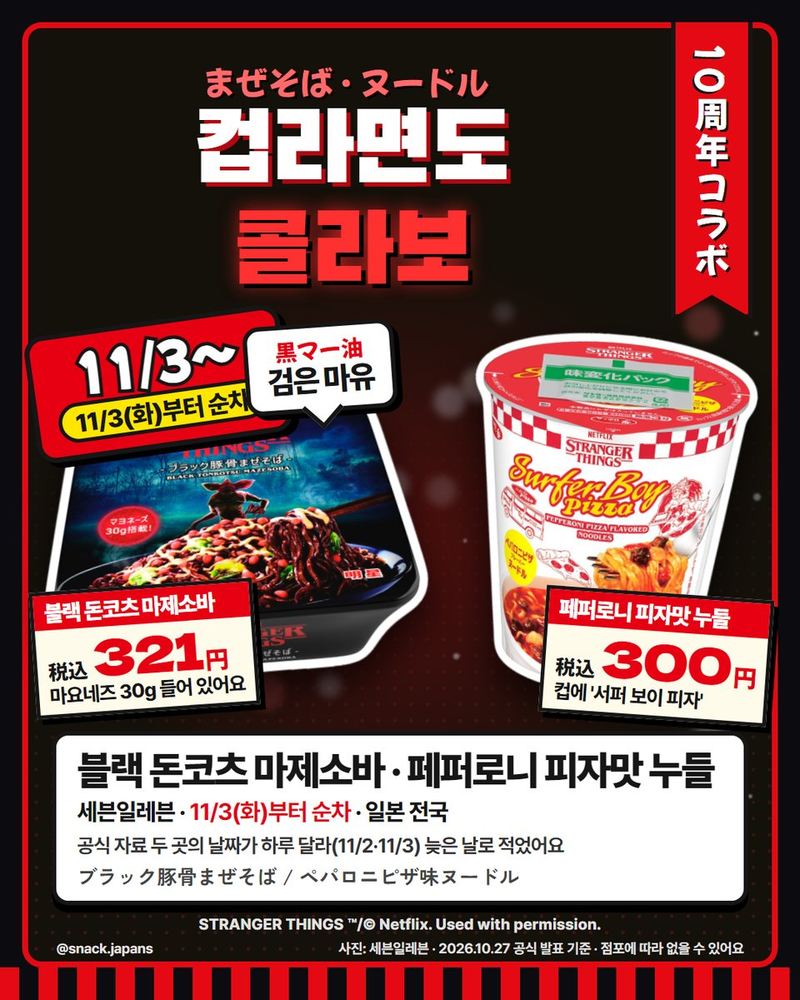
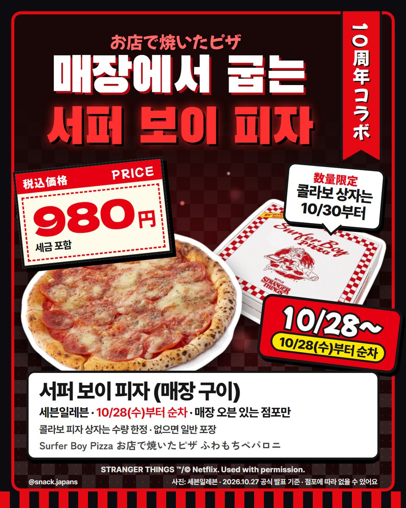
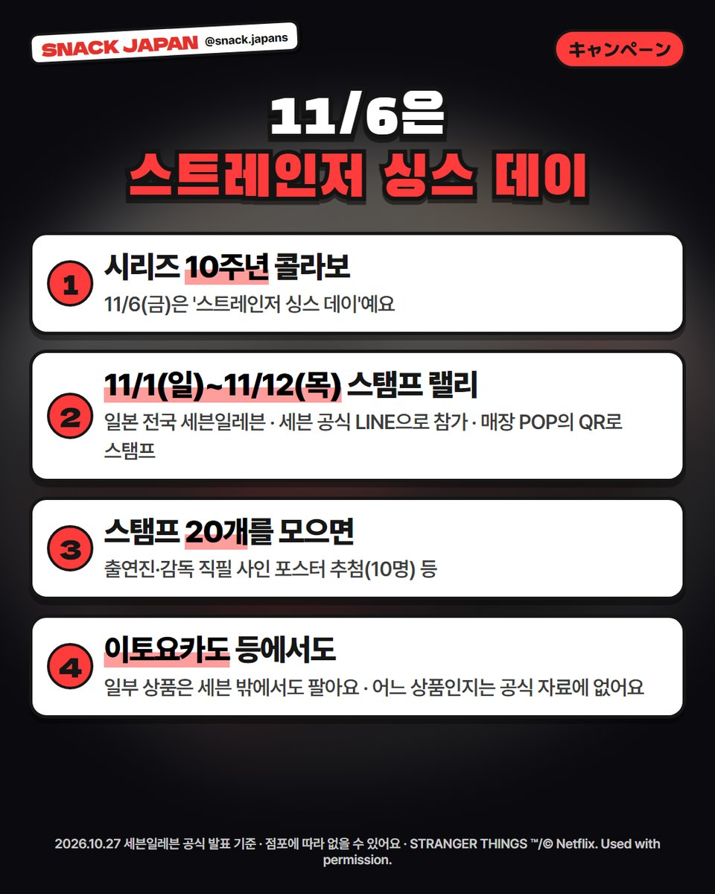

일본 세븐일레븐 기묘한 이야기 콜라보 16종 출시, 새까만 과자부터 뒤집힌 세계 도넛까지
넷플릭스 '기묘한 이야기' 10주년! 일본 세븐일레븐에 콜라보 과자·도넛·컵라면·피자 16개가 나왔어요 👾
넷플릭스 '기묘한 이야기'가 일본 세븐일레븐을 뒤집어 놨어요?! 👾
시리즈 10주년 콜라보로 과자·도넛·컵라면·피자까지 16개가 나왔어요.
11/6(금)은 '스트레인저 싱스 데이'래요.
세븐일레븐 공식 발표로 하나씩 정리해 볼게요!

1. 언제 나와요?
- 10/28(수)~ 매장에서 굽는 '서퍼 보이 피자' (매장 오븐 있는 점포만)
- 10/29(목)~ 과자 6종
- 11/3(화)~ 도넛 3종·빵 1종 (오키나와현 제외)
- 11/3(화)부터 순차 컵라면 2종 (공식 자료 두 곳의 날짜가 하루 달라 늦은 날로 적었어요)
- 11/5(목)~ 스티커 과자 3종
- 모두 그날부터 순차 발매예요
- 가격: 사진 카드에 정리해 뒀어요

2. 새까만 과자들 (10/29부터)
- 검은 초코 딸기: 대나무 숯으로 까맣게 한 화이트초코로 동결건조 딸기를 통째 코팅 (세븐 설명)
- 블랙 치즈 아몬드: 숯을 섞은 검은 치즈크림 + 아몬드 + 블랙페퍼 (세븐 설명)
- 블랙 치타라: 치즈 대구포 안주 '치타라'를 새까맣게, 카르파스(소시지)풍 맛
- 빨간 캐러멜콘(메이플 와플맛)·캐러멜 팝콘·미니 오징어튀김(다코야키풍)도 같이 나왔어요


3. 도넛·빵 (11/3부터)
- 업사이드 다운 도넛: 숯 넣은 검은 반죽에 빨간 글레이즈·체리 필링, '표면 세계와 뒤집힌 세계'를 한 번에 (세븐 설명)
- 데모고르곤 도넛: 괴물 '데모고르곤'을 본뜬 꽃잎 5장 모양, 초코크림이 들어 있어요
- 크리스마스 전구 도넛: 화이트초코 코팅에 알록달록 토핑, 속에 슈거크림
- 헬파이어 빵: 고기 2종+피망+매운 소스 조리빵
- 오키나와현에서는 팔지 않아요


4. 스티커 과자 (11/5부터)
- 바삭 퍼프 초코: 스티커 9종 중 1장
- 검은 포테이토 스틱 블랙페퍼맛: 스티커 23종 중 1장
- 쫀득 포도 구미: 스티커 9종 중 1장
- 어떤 스티커가 나올지는 랜덤이에요

5. 컵라면·피자
- 블랙 돈코츠 마제소바: 검은 마유(黒マー油)에 마요네즈 30g
- 페퍼로니 피자맛 누들: 컵에 극 중 피자 가게 '서퍼 보이 피자' 그림
- 서퍼 보이 피자: 매장 오븐에서 굽는 페퍼로니 피자, 콜라보 피자 상자는 10/30부터 수량 한정(없으면 일반 포장)


6. 스탬프 랠리
- 기간: 11/1(일)~11/12(목), 일본 전국 세븐일레븐
- 세븐 공식 LINE으로 참가, 매장 POP의 QR로 스탬프
- 20개를 모으면 출연진·감독 직필 사인 포스터 추첨(10명) 등
총평
- 기준: 세븐일레븐 보도자료·특설 페이지, 10월 27일 확인
- 매장에서 찾기: 상품 이름이 모두 「Netflix ストレンジャー・シングス ○○」로 시작해요
- 참고: 일부 상품은 이토요카도 등에서도 판대요(어느 상품인지는 공식 자료에 없어요). 점포에 따라 없을 수 있어요
- 참고: 아직 먹어 보지 않아서 맛 이야기는 빼고 공식 설명만 옮겼어요
- 추천: 기묘한 이야기 팬, 11월에 일본 여행 가는 분
16개 중 하나만 고른다면 뭐예요? 🔦
사진: 세븐일레븐
STRANGER THINGS ™/© Netflix. Used with permission.